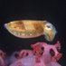

高市抵深圳迎接规格低于美俄，与习近平只握了手后续
15 条帖子，合计浏览 1063 万次
之前的报道：11月17日午间“李强提前离开马尼拉，日中首脑没有碰面”
首相高市早苗18日抵达深圳，出席中国主办的亚太经合组织（APEC）首脑会议，这是她就任后第一次访华。中方接机的规格明显低于美国和俄罗斯首脑，中国国家主席习近平只和她握了手，没有安排会谈。日本外务省干部批评中方“失礼”，每日新闻也指出，主要参加国首脑没能和习近平会谈，这种情况很少见。
- 接机规格
- 特朗普总统由习近平亲自到机场迎接，普京总统由中共政治局常委蔡奇（党内排名第五）迎接。高市由中国外交部礼宾大使章启月接待，其他几位首脑到达时有年轻人捧着红色花束欢迎，高市到达时没有。 共同社
- 只有握手
- 高市在欢迎晚宴会场附近和习近平夫妇握手，说了几句话，三人一起合影。读卖新闻说习近平没有开口回应，双方也没有安排正式会谈，2022年以来每年借 APEC 举行的日中首脑会谈因此中断。 时事通信、读卖新闻
- 日方反应
- 日本外务省一名干部说，中方“连外交上最起码的礼节都没有，实在失礼”。每日新闻说，日本政府本来就预料不会有正式会谈。 每日新闻
- 美中俄
- 美中俄三国首脑定于19日在深圳举行史上第一次三方会谈。高市和普京预计只会站着简短交谈几分钟。 FNN、TBS
补充来源：高市首相の出迎え簡素 花束なし、米ロと比べ、高市首相が習近平国家主席と握手、正式会談は見送りか…語りかけられた習氏は口を開か、高市総理が中国・深圳到着も歓迎に“差”？【Nスタ解説】
日本专机是波音777，舱门比美韩用的747高二三十厘米，舷梯车按747的高度铺好，才出现台阶落差，算不上故意刁难。
@chaoyinsukandao欢迎晚宴上高市入场时，乐队演奏了坂本九的日本名曲《上を向いて歩こう》。
 Mi2
Mi2外务省安排行程向来周密，如果高市迟到，只能是她自己有意为之。

閑居
木原称起用ナオキマン是广告公司提案，上限1.5亿后续
4 条帖子，合计浏览 42.9 万次
之前的报道：11月17日晚间“政府宣传起用了阴谋论系 YouTuber”
政府的安全保障宣传特辑起用了 YouTuber ナオキマン（以都市传说和阴谋论视频出名），引来批评。官房长官木原稔（政府发言人）18日说明，起用他是承办宣传的广告公司大広等提出的方案，面向年轻人的宣传经费上限约1.5亿日元。向内阁府追问此事的つじもと清美在 X 上公开了业务说明书，说政府还在考虑投放电视广告。
- 起用经过
- 木原说，这次宣传先让几家公司提交方案，再按评分选出得分最高的一家承办。中标的是广告公司大広和大広WEDO组成的联合体，起用ナオキマン是它们提出的，内阁府采纳了。 共同社、TBS
- 花多少钱
- 木原说具体的事业费难以公开，面向年轻人的宣传经费总额上限是1.5亿日元。 共同社
- 页面进度
- 宣传网页还有没公开的部分。木原说内容仍在制作中，什么时候更新还没有定。 共同社
- 批评
- 晚报日刊ゲンダイ说，社交媒体上出现了“政府自己在散布阴谋论”“更像政治宣传”等批评。 日刊ゲンダイ
补充来源：木原官房長官“広告会社の提案” 政府広報に陰謀論系人材起用で、木原官房長官 “委託事業者から提案があり内閣府として採用” 政府広報に陰謀論系Y、“高市首相が天皇末裔説”を発信の陰謀論系ユーチューバーに税金1.5億円…また政府
KARTE泄露波及三菱UFJ，银行约650万件外流后续
4 条帖子，合计浏览 203 万次
之前的报道：11月17日晚间“楽天証券和JINS同日传出大规模个人信息泄露”
营销工具 KARTE（分析网站访客行为、给不同顾客推送不同内容的服务）遭入侵的影响继续扩大。三菱UFJ银行18日宣布约650万件顾客信息外泄，集团旗下的信托银行和证券公司也公布了泄露。提供 KARTE 的是东京的营销支持公司プレイド，它的客户横跨化妆品、服装、银行等行业，一家外包商出事，牵连了很多企业。
- 泄露内容
- 三菱UFJ银行外泄的是约650万件顾客的性别、年龄和居住地区，地区只精确到都道府县或政令指定的大城市。银行说其中没有姓名、住址、电话和邮箱，自己的系统没有被入侵，目前也没发现信息被冒用。 NHK、读卖新闻
- 集团波及
- 三菱UFJ信托银行外泄约23万件，三菱UFJ摩根士丹利证券外泄约28万件性别和年龄段信息。三菱UFJ eスマート证券外泄约6万个证券账号和约10万件年龄信息，公司说这些信息互相对不上号，认不出本人。 读卖新闻
- 经过
- KARTE 13日遭第三方入侵，プレイド随即停掉了全部功能。17日它把泄露范围通报给银行，银行18日对外公布。 FinTech Journal
- 后续应对
- 银行会用邮件等方式逐一通知相关顾客，11月18日到12月18日设专门的咨询窗口。 and secure
- 其他企业
- 使用 KARTE 的企业里，化妆品公司 DHC 约1900万件、服装连锁しまむら约700万件会员信息也已外泄。 FNN
补充来源：三菱UFJグループ漏えい相次ぐ 銀行は顧客情報約650万件流出、サービス受託企業への不正アクセスで漏えい拡大…三菱ＵＦＪ銀行６５０万件、ＤＨＣ１、三菱UFJ銀行、顧客約650万件の性別・年齢・居住地域が漏えい 委託先のKART
厚劳省开始讨论被扶养家属是否该交医保费
4 条帖子，合计浏览 106 万次
厚生劳动省（主管医疗和社会保障的部门）的社会保障审议会专门小组17日开始讨论，要不要让被扶养家属自己负担公共医疗保险费。现在，由上班族或公务员扶养的主妇、孩子和老人不交保险费也能用医保。转发这条新闻的帖子里，有人担心有孩子的家庭负担会成倍增加，也有人说这对生育不利。
- 讨论什么
- 审议会从制度公平的角度，讨论被扶养人不交保险费的做法要不要改。厚劳省表示会慎重研究。 共同社、NHK
- 为何要改
- 夫妻都上班、各自交保险费的家庭越来越多，有人指出现行做法不公平，专家也要求讨论。另一方面，增加负担预计会引起反对。 共同社
- 适用对象
- 被扶养人是靠加入者养活的配偶、父母、子女等，最多到三等亲。60岁以下的配偶，年收入大致要低于130万日元。上班族加入的医保约有6800万人，其中2500万人以上是被扶养人。 共同社、日经
- 养老金
- 厚劳省9月已经开始研究缩小“第3号被保险者”的范围，也就是主妇不交保费也能领养老金的制度，结论会放进2030年的年金制度改革。 共同社
黄仁勋表态愿回任，董事会在财报会上明确拒绝后续
4 条帖子，合计浏览 114 万次
之前的报道：11月17日晚间“NVIDIA设国安出口管制委员会，WSJ揭黄仁勋训人”
NVIDIA 创始人、前首席执行官（CEO）黄仁勋美国时间17日第一次发表声明，说如果董事会认为对公司有利，他愿意回来。几个小时后，董事长 Harvey Jones 在财报电话会一开场就宣布不让他复职。同一场电话会上，公司公布季度营收比去年翻了一倍，超出市场预期。
- 董事会
- Jones 说，董事会一致接受黄仁勋辞职，不打算让他复任 CEO，也不回答有关辞职和调查的提问。他第一次说明了辞职理由：黄仁勋的个人行为不符合公司的行为准则和文化规范。 AP、CNN
- 本人声明
- 黄仁勋在社交媒体上说，如果董事会认为他回来最符合股东、员工、公司和国家的利益，他会感到荣幸。这是他辞职后第一次公开表态。 AP、CNN
- 季度财报
- 第三季度营收约1160亿美元，比去年同期增长约1倍，比华尔街预期多约70亿美元。数据中心部门增长约110%，公司还上调了业绩展望，盘后股价一度涨约5%。 Fortune、みんかぶ、NBC
- 找接班人
- 董事会请猎头公司 Heidrick & Struggles 物色正式 CEO，在此期间由临时 CEO Colette Kress 继续管理公司。 Decrypt
- 内部分歧
- 董事会里也有不同声音，有三名董事在推动让黄仁勋回来，黄仁勋至少和一名董事谈过。 Semafor、The Next Web
补充来源：Nvidia rejects Jensen Huang's offer to r、Nvidia rules out Jensen Huang’s return a、Nvidia Board Shuts Down Jensen Huang Com
新管理层一上来就战略收缩，其他芯片厂能拿到产能自己生产，大型云计算公司的议价权会变强，NVIDIA 可能面临业绩和估值一起下跌。
 Suwako — e
Suwako — e美国很多董事是职业董事，遇到困难时容易明哲保身，这件事暴露了独立董事制度的弊端。
 Esther
Esther
GPT-6.2 两款模型上线，Astra 降价两成后续
10 条帖子，合计浏览 32.9 万次
之前的报道：11月16日早间“有用户称 OpenAI 因安全顾虑压着更大模型”
OpenAI 美国时间17日发布 GPT-6.2 Astra 和 GPT-6.2 Sol 两款模型，Astra 面向复杂项目，Sol 面向日常工作。OpenAI 说这是它目前对外发布的最强模型，自家安全评估里网络安全能力达到最高一级。时间线上的评价分歧很大，有人说它胜过 Anthropic 的 Fable 5.2，也有人抱怨审美差、执行跑偏，这些都是个人账号的使用体验。
- 怎么用
- ChatGPT Work 和 Codex 的 Plus、Pro、Enterprise、Edu 用户当天起就能用，开发者可以通过接口调用 gpt-6.2-astra 和 gpt-6.2-sol。Pro 用户还能用速度更快的极速模式（Ultrafast）。 OpenAI官方
- 价格
- Astra 每百万 token（模型计量文字的单位）输入8美元、输出40美元，比 GPT-6 Astra 便宜20%。Sol 维持输入2美元、输出10美元。 Developers Digest、Unite.AI
- 安全评级
- 按 OpenAI 自己的风险评估框架，两款模型的网络安全能力都达到最高一级，生物和化学能力达到次高一级。Astra 是它第一款在 AI 自我改进能力上评为次高一级的对外模型，OpenAI 因此收紧了高风险网络安全请求的默认限制。 OpenAI官方、Unite.AI
补充来源：GPT-6.2 Astra and Sol are now available、OpenAI Deployment Safety Hub、Pricing, Benchmarks and What to Switch
在自己的递归自我改进任务上，Astra 6.2 明显胜过 Fable 5.2，网上差评多，是因为要发挥它最强的能力需要使用者花很大力气。
Zesen Huang让 Astra 6.2 跑了一夜视频创作流程，审美糟糕、执行跑偏，同样的流程 Opus 5.5 能稳定完成。
 songkeys
songkeys跑分上 Astra 6.2 基本追平 Fable 5.2，Sol 追平 Opus 5.5，差距主要在使用手感。
 AstroHan
AstroHan
Google 发布 Neon，搜索改用 Hydrogen后续
9 条帖子，合计浏览 62.7 万次
之前的报道：11月17日晚间“多位用户比较新模型，两人力荐 Gemini 4 Carbon”
Google 美国时间18日发布 Gemini 4 系列的新模型 Neon，价格介于便宜的 Hydrogen 和高端的 Carbon 之间。同一周，Google 还把 Hydrogen 接入了全球的 Google 搜索。Neon 发布前，它的价格先出现在 Google Cloud 的计费目录里，时间线上有用户据此猜测整个系列的排位。
- 价格
- Neon 每百万 token（模型计量文字的单位）输入3美元、输出15美元，缓存过的输入只要0.15美元。上下文窗口约100万 token。 Google官方
- 使用渠道
- Neon 已在 Google AI Studio 的接口、企业版 Gemini、付费 Pro 和 Ultra 用户的编程工具 Antigravity，以及 Pro 和 Ultra 用户的 Gemini 应用里陆续上线。 Google官方
- 性价比
- Google 说，在默认的高思考档位下，Neon 每个任务的成本比 Carbon 低32%，在 Vals 和 Agent Arena 等第三方榜单上属于性能和成本兼顾得最好的一档。 Google官方
- 搜索升级
- Google 说这是搜索有史以来最大的一次模型升级，能更好地理解用户意图，把问题拆成多个子查询再汇总，回答更图像化，多语言能力也更强。 Google官方
推测 Gemini 4 全系按元素命名，从 Flash 级的 Hydrogen，到性价比档的 Neon、Pro 级的 Argon、旗舰推理的 Carbon，再到更高端的 Krypton。
相宁在半导体开发里用 Hydrogen 写 RTL（描述芯片电路的代码），一次指出问题就能改好，比 3.8 Flash 省下很多时间。
 Awe Morris
Awe Morris算下来每月100美元的 Ultra 5x 套餐能用出约840美元的接口额度，约为月费的8倍，比 Codex 和 Claude 的倍数低。
 Jiaxi Cui
Jiaxi Cui
植田称继续加息，晴海FLAG一套降到约1.28亿后续
22 条帖子，合计浏览 18.7 万次
之前的报道：11月17日晚间“东京分售公寓租金创新高，ドゥトゥール降1670万”
日银总裁植田和男18日在国会表示，日银会继续加息。同一天，房产账号和中介又贴出多套湾岸和东京市中心公寓的降价挂牌，湾岸大型小区 HARUMI FLAG 的一套3LDK 比最初挂牌价降了约7000万日元。各套房源信息都来自个人账号和中介挂牌，没有官方统计。
- 植田表态
- 植田18日在参院特别委员会说，现在的金融环境仍然宽松，日银会根据经济和物价情况继续提高政策利率。他说关键是确认基础通胀能否稳定在2%左右，没有说下次加息的时间。 みんかぶ、BigGo 财经
- 晴海大降
- HARUMI FLAG PARK VILLAGE T栋19层一套朝西的3LDK，75平方米，2025年8月建成，挂牌价分四次从约2亿日元降到1亿2800万日元。 X 用户
- 丰海降价
- THE TOYOMI TOWER MARINE&SKY EAST 23层一套朝东的3LDK，约74平方米，降了500万日元，现价约1亿4000万日元。这是中介エムティーハウス独家受托的房源，买方中介费打七折。 X 用户
- 其他湾岸
- ブリリア有明スカイタワー一套3LDK降到约9700万日元，每坪（约3.3平方米）约440万日元，是楼内最低。シティタワーズ東京ベイセントラルタワー一套降了约1900万日元，约13%，パークタワー晴海一套降了1000万日元。 X 用户
- 麹町降价
- ザ・パークハウス麹町三丁目一套62平方米的2LDK，2026年4月建成，挂牌价从约2亿4000万日元一路降到1亿8800万日元。 X 用户
补充来源：東京時間に伝わった指標・ニュース、植田和男総裁、利上げ継続の姿勢を再表明 円安が食品価格を押し上げる恐れに警告
听说湾岸有换房家庭先买了新房，旧房却卖不掉，以前还有收购商托底，现在没有了，和贷款银行协商后低价出售的情况在增加。
 pepepe.special. 𝕏
pepepe.special. 𝕏湾岸有些工薪家庭同时持有新房和二手房，账面亏损太大又割不了肉，X 上煽动买房的账号也有责任。
 福太郎
福太郎现在的行情下卖房最好找大型中介，省下的中介费比不上多降的价，大中介的客户渠道很重要。
 Jun
Jun
值得单独看的帖子
- 卡内基梅隆免费公开课程录像
卡内基梅隆大学11月16日上线 CS Learn 平台，免费公开计算机课程的完整录像，从零基础的计算原理到生成式 AI、大模型机器学习和 AI 智能体都有。可以直接挑课系统自学。
 灰狐，赞 148，含图
灰狐，赞 148，含图 - Agent 评测怎么搭
Vercel 用一个模拟咖啡下单的命令行工具，演示把 Agent 测试分成确定性测试、单轮评测和完整任务评测三层，还展示了只看结果会把“没搜索就放弃”误判成通过。文末附了可以直接交给编程 Agent 的搭建提示词。
 Xudong Han，赞 26
Xudong Han，赞 26 - 一人月合3000个PR的做法
SpaceX 和 xAI 的工程师 Lauren Tan 在 AI Engineer Code Summit 上的17分钟演讲。她上个月一个人往生产环境合并了约3000个 PR（代码合并请求），做法是把规则写进代码和静态检查，Agent 每犯一次错就加一条 lint（自动代码检查），再让 Agent 用测试、截图和录屏证明功能正常。想让 Agent 少出错的团队可以照着改造代码库。
 Hux，赞 5,710，含视频
Hux，赞 5,710，含视频 - 为 pi 调优的开源 Qwen
Hugging Face 发布用强化学习加 LoRA（一种轻量微调方法）为 pi 编程 agent 调过的 Qwen3.8-27B，权重开放，附方法说明。官方数据显示，编程基准 SWE-bench Pro 难题集的通过率从29.4%升到62.7%，每个任务的工具调用次数少了一半以上。
 Versun，赞 17
Versun，赞 17 - 无头模式下 Claude 不报注入
一项125次运行的审计发现，Claude Code 用 -p 无头模式时，系统提示里提醒用户注意提示注入的那句话被去掉了。模型仍会拒绝泄密，但约一半情况不告诉你遭到了攻击。用 --append-system-prompt 补回这句话后，20次全部发出警告，在自动化流水线里用 Claude Code 的人可以照做。
 bebu，赞 5
bebu，赞 5 - GPT-6.2 官方提示词指南
OpenAI 发布了 GPT-6.2 Astra 的提示词指南，可以丢给 Codex，让它帮你改写提示词和 AGENTS.md。作者觉得最有用的两点：提需求时说明验收要看什么，AGENTS.md 只写代码里看不出来的约定。
Xudong Han，赞 126 - 远程接着用电脑里的 Agent
开源小工具，在 Claude Code、Codex 或 Pi 的会话里粘贴一句提示，Agent 会自己装好，之后用浏览器就能远程接着用电脑上的 Agent。端到端加密，聊天记录只留在本机，中转跑在 Cloudflare 上，目前免费。
 Gangqiang Yao，赞 37，含视频
Gangqiang Yao，赞 37，含视频 - Apple 开源实时视频生成模型
FastFrames 有13亿和140亿参数两个版本，基于 Wan2.1，能在本地硬件上实时生成480p 视频，单帧延迟约35毫秒。模型放在 Hugging Face 上，可以下载试用。
Gorden Sun，赞 22，含视频 - 循环 Transformer 省参数
Loopback Transformer 重新设计了反复使用同一组层的循环式 Transformer 的残差连接，也就是每轮计算结果的叠加方式，用标准 Transformer 40%到75%的参数做到了更低的损失。帖子附了 arXiv 论文链接。
ZENKIGEN AI，赞 62 - 雷曼危机后东京市中心房价跌幅
引用三井不動産リアルティ（房产中介）的资料：从雷曼危机前的最高每坪单价到之后的低点，青山涩谷跌了51%，麻布赤坂六本木跌47%，番町麹町跌37%，广尾惠比寿跌36%，市谷四谷跌32%。作者认为投资性买卖多的地区波动更大，可以拿来估算下跌风险。
 都心マンションツイート，赞 185
都心マンションツイート，赞 185